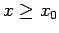
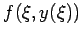
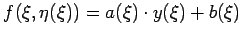

Es führen relativ wenige physikalische oder mechanische Aufgabenstellungen direkt auf eine Integralgleichung. Häufiger sind derartige Probleme mittels Differentialgleichungen beschreibbar. Die Bedeutung der Integralgleichungen ist in erster Linie darin zu sehen, daß sich eine Reihe von Differentialgleichungen einschließlich der zugehörigen Rand- und Anfangsbedingungen in eine Integralgleichung überführen lassen.
| Beispiel |
|
Aus der Anfangswertaufgabe y'(x)=f(x,y) mit  und y(x0) = y0 entsteht durch Integration in den Grenzen von x0 bis x die Integralgleichung |
Die gesuchte Funktion y(x) tritt hier sowohl auf der linken Seite der Gleichung als auch im Integranden auf. Die Integralgleichung (11.3) ist linear, wenn die Funktion  die Form  hat, d.h., die zugrundeliegende Differentialgleichung ist ebenfalls linear.